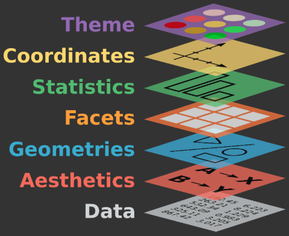

Grammar of Graphics
Fondamenti di ggplot2
Cosa significa “gg” in ggplot2?
Grammar of Graphics
Framework teorico di Leland Wilkinson (1999)
- Sistema per progettare visualizzazioni
- Non su cosa è bello o best practices
- Focus: come costruire qualsiasi visualizzazione
- Base per: ggplot2, Tableau, Vega-lite
La filosofia
Decostruire i grafici in componenti riutilizzabili
Tutti i grafici (barre, linee, scatter) condividono elementi comuni:
- Scale
- Coordinate
- Trasformazioni statistiche
- Posizioni
- Geometrie
Mix & Match: Combina i componenti per creare qualsiasi visualizzazione!
I 7 componenti principali

I layer si sovrappongono dal basso verso l’alto
Layer 1: Data
Layer 1: Data
Esempio di tabella Tidy per ggplot2:
| country | year | cases | population |
|---|---|---|---|
| Afghanistan | 1999 | 745 | 19987071 |
| Afghanistan | 2000 | 2666 | 20595360 |
| Brazil | 1999 | 37737 | 172006362 |
| Brazil | 2000 | 80488 | 174504898 |
| China | 1999 | 212258 | 1272915272 |
| China | 2000 | 213766 | 1280428583 |
- Ogni riga = un’osservazione
- Ogni colonna = una variabile
- Ogni cella = un singolo valore
Layer 2: Aesthetics (Estetiche)
Mapping vs Setting
Due modi di assegnare aesthetics:
Mapping (aes()) - Basato sui dati (dentro aes()):
# Colore dipende dalla variabile 'class'
ggplot(mpg, aes(x = displ, y = hwy, color = class)) +
geom_point()- Crea automaticamente una legenda
- Scala applicata automaticamente
Setting (fisso) - Valore costante (fuori aes()):
- Nessuna legenda
- Nessuna scala
Errore comune: aes(color = "blue") → crea variabile costante “blue”!
Color vs Fill
Due aesthetic per il colore:
color - Bordi, linee, punti (contorni):
geom_point(color = "red") # punti rossi
geom_line(color = "blue") # linea blu
geom_bar(color = "black") # bordo barre nerofill - Riempimento interno (aree):
geom_bar(fill = "steelblue") # barre riempite
geom_boxplot(fill = "lightgreen") # box riempiti
geom_violin(fill = "orange") # violin riempitiEntrambi insieme:
Regola pratica: Geoms con area interna usano fill, geoms 1D usano color
Layer 3: Geometries (Geometrie)
Forme visive che rappresentano i dati:
1D (una variabile):
geom_histogram(),geom_density(),geom_dotplot()
2D (due variabili):
geom_point()- Scatter plotgeom_line()- Linee connessegeom_smooth()- Linea di tendenzageom_boxplot(),geom_violin()- Distribuzioni
Conteggi:
geom_bar(),geom_col()- Barre
Multipli layer: Combina più geometrie nello stesso grafico!
Layer 3: Geometries
Ogni geom ha parametri specifici:
# Point: shape, size, alpha
geom_point(shape = 16, size = 3, alpha = 0.7)
# Line: linetype, linewidth
geom_line(linetype = "dashed", linewidth = 1)
# Smooth: method, se (standard error)
geom_smooth(method = "lm", se = TRUE)I geom ereditano le aesthetics da ggplot() ma possono avere le proprie:
Template base di ggplot2
Layer 4: Facets
Suddividi i dati in sottografici multipli (piccoli multipli):
# Una variabile - layout automatico
facet_wrap(~ class, ncol = 3)
# Due variabili - griglia
facet_grid(drv ~ cyl)
facet_grid(rows = vars(drv),
cols = vars(cyl))Potente per:
- Confrontare sottogruppi
- Evitare sovrapposizione (decluttering)
- Il cervello riusa i pattern visivi tra panel
- Esplorare interazioni tra variabili
Layer 4: Facets
Opzioni di personalizzazione:
# Scale libere per ogni panel
facet_wrap(~ class, scales = "free") # entrambi liberi
facet_wrap(~ class, scales = "free_x") # solo x libero
facet_wrap(~ class, scales = "free_y") # solo y libero
# Etichette personalizzate
facet_wrap(~ class, labeller = label_both) # mostra "class: suv"
# Margini
facet_grid(drv ~ cyl, margins = TRUE) # aggiunge totali marginaliBest practice: Mantieni scale fisse quando possibile per facilitare confronti!
Layer 5: Stats (Trasformazioni)
Trasformazioni sui dati prima di plottare:
Stats comuni:
stat_bin()- Istogrammi (conta in bin)stat_count()- Bar chart (conta osservazioni)stat_smooth()- Modelli (lm, loess, gam)stat_boxplot()- Quartili e outlierstat_summary()- Funzioni custom (media, mediana, etc.)
Ogni geom ha uno stat di default:
Layer 5: Stats
Usare stats direttamente (invece di geoms):
# Equivalenti
geom_bar(stat = "count")
stat_count(geom = "bar")
# Cambio di stat
geom_bar(stat = "identity") # usa valori y così come sono
# Summary personalizzate
stat_summary(fun = mean, geom = "point", size = 4)
stat_summary(fun.data = mean_se, geom = "errorbar")Variabili calcolate: Gli stats creano nuove variabili accessibili con after_stat():
Layer 6: Coordinates
Il “tessuto” su cui plottiamo - operano dopo scale:
Tipi principali:
coord_cartesian()- Default (x, y piano)coord_flip()- Scambia x ↔︎ ycoord_fixed()- Ratio fisso (utile per mappe)coord_polar()- Coordinate polari (pie chart)coord_map()- Proiezioni geografichecoord_trans()- Trasformazioni non-lineari
Zoom senza rimuovere dati:
Layer 6: Coordinates
Esempi pratici:
# Barplot orizzontale (alternativa: coord_flip())
ggplot(mpg, aes(y = class)) + geom_bar()
# Ratio fisso per aspect ratio 1:1
ggplot(faithful, aes(eruptions, waiting)) +
geom_point() +
coord_fixed(ratio = 1)
# Pie chart (discouraged!)
ggplot(mpg, aes(x = "", fill = class)) +
geom_bar(width = 1) +
coord_polar(theta = "y")Differenza chiave: coord_cartesian() vs scale_*_continuous(limits = ...)
- coord: zoom visuale, mantiene tutti i dati
- scale: rimuove dati fuori range (influenza stats!)
Layer 7: Theme
Controllo completo su elementi non-data (tutto ciò che non rappresenta dati):
Temi built-in:
theme_gray() # default
theme_minimal() # minimalista
theme_classic() # assi classici
theme_bw() # bianco e nero
theme_dark() # sfondo scuro
theme_void() # vuoto (solo dati)Pacchetti con temi extra:
ggthemes: Economist, FiveThirtyEight, Tuftehrbrthemes: Typography-focusedtvthemes: Simpsons, Game of Thrones…
Layer 7: Theme
Personalizzazione con theme() - Categorie principali:
theme(
# Testo
plot.title = element_text(size = 16, face = "bold"),
axis.text = element_text(size = 10),
axis.title.x = element_text(margin = margin(t = 10)),
# Linee
axis.line = element_line(color = "black", linewidth = 0.5),
panel.grid.major = element_line(color = "gray90"),
panel.grid.minor = element_blank(), # rimuovi
# Rettangoli/Sfondi
panel.background = element_rect(fill = "white"),
plot.background = element_rect(fill = "gray95"),
# Legend
legend.position = "bottom", # "none", "left", "right", "top"
legend.title = element_blank()
)Bonus: Scales
Controllano come i dati diventano valori visivi
Pattern: scale_[aesthetic]_[type]()
Tipi di scale:
# Colore - continuo
scale_color_continuous()
scale_color_gradient(low = "blue", high = "red")
scale_color_viridis_c() # colorblind-friendly
# Colore - discreto
scale_color_discrete()
scale_color_brewer(palette = "Set1")
scale_color_manual(values = c("red", "blue", "green"))
# Posizione
scale_x_log10() # scala logaritmica
scale_y_reverse() # inverte asse y
scale_x_date() # per dateBonus: Scales
Componenti di una scale (tutti opzionali):
scale_color_continuous(
name = "Titolo Legenda", # nome nella legenda
breaks = c(2, 4, 6), # tick marks
labels = c("Low", "Med", "High"), # etichette custom
limits = c(0, 10), # range
trans = "log10", # trasformazione
guide = guide_colorbar() # tipo di guida
)Scale per size, shape, alpha, etc. seguono la stessa logica:
Position adjustments
Modifica posizione elementi dentro un layer (risolve overlapping):
# Identity - nessun aggiustamento (dati sovrapposti)
geom_bar(position = "identity", alpha = 0.5)
# Stack - impilati (default per barre)
geom_bar(position = "stack")
# Dodge - affiancati (gruppi side-by-side)
geom_bar(position = "dodge")
# Fill - impilati a 100%
geom_bar(position = "fill")
# Jitter - rumore casuale (scatter plot con sovrapposizione)
geom_point(position = "jitter")
geom_point(position = position_jitter(width = 0.2, height = 0))Fondamentale per visualizzare correttamente dati sovrapposti!
Theme elements
Quattro tipi di elementi per personalizzazione completa:
1. element_text() - Testo (titoli, labels, caption):
plot.title = element_text(
family = "Helvetica", face = "bold", size = 16,
color = "steelblue", hjust = 0.5, margin = margin(b = 10)
)2. element_line() - Linee (assi, griglie):
axis.line = element_line(color = "black", linewidth = 1, linetype = "solid")
panel.grid = element_line(color = "gray90", linewidth = 0.5)3. element_rect() - Rettangoli (sfondi, bordi):
panel.background = element_rect(fill = "white", color = "black", linewidth = 1)
legend.background = element_rect(fill = "gray95", color = NA)4. element_blank() - Rimuove elemento:
Theme elements - Gerarchia
Gerarchia degli elementi - Da generale a specifico:
theme(
# Livello 1: Globale
text = element_text(family = "Arial", size = 12),
line = element_line(color = "gray30"),
# Livello 2: Categoria
axis.text = element_text(size = 10), # eredita family da text
# Livello 3: Specifico (override)
axis.text.x = element_text(angle = 45, hjust = 1),
axis.text.y = element_text(color = "red")
)Tip: Modifica elementi più generali possibile per consistenza!
Salvare tema custom:
Primo esempio completo
library(tidyverse)
ggplot(data = mpg,
mapping = aes(x = displ, y = hwy, color = class)) +
geom_point(size = 3, alpha = 0.7) +
geom_smooth(method = "lm", se = FALSE) +
scale_color_brewer(palette = "Set1") +
labs(
title = "Efficienza vs Cilindrata",
x = "Cilindrata (litri)",
y = "Miglia per gallone (autostrada)"
) +
theme_minimal()Layer multipli
ggplot2 è compositivo - somma layer!
ggplot(mpg, aes(x = displ, y = hwy)) +
geom_point(aes(color = class)) + # Layer 1
geom_smooth(color = "black") + # Layer 2
geom_rug(sides = "bl") # Layer 3Ogni layer può avere: - Proprie estetiche - Propri dati - Proprie geometrie
Principio chiave: Logica > Memorizzazione
Non memorizzare ogni funzione!
Capisci la logica:
- Cambiare aspetto dati? → geoms
- Cambiare colori/scale? → scales
- Cambiare elementi non-data? → theme
- Dividere in sottografici? → facets
Il sistema è consistente e prevedibile
Componibilità
I componenti sono progettati per lavorare insieme:
- Stessi principi per tutti i tipi di grafici
- Esplorazione sistematica
- Creazione di visualizzazioni originali
- Riduce carico cognitivo
La grammatica rende ggplot2 intuitivo una volta capito il sistema!
Vantaggi del framework
- Consistenza: Stesso approccio per tutti i grafici
- Flessibilità: Mix & match componenti
- Espandibilità: Facile creare nuove geometrie
- Leggibilità: Codice dichiarativo e chiaro
- Riproducibilità: Tutto nel codice, no click
- Potenza: Da semplici a complessi con stessa logica
Ecosistema di estensioni
ggplot2 è una piattaforma, non solo un package!
200+ estensioni disponibili:
patchwork- Composizione graficigganimate- Animazioniggrepel- Etichette intelligentiggraph- Network/grafiggridges- Ridge plots- … molte altre!
Esercizio pratico
Crea il tuo primo grafico!
Usa il dataset mpg (incluso in ggplot2):
- Esplora i dati con
View(mpg)oglimpse(mpg) - Scegli 2 variabili per x e y
- Aggiungi una terza variabile per il colore
- Prova almeno 2 geometrie diverse
- Personalizza con scale e theme
Tempo: 15 minuti
Recap: I 7 layer
- Data - Dataset (
data = mpg) - Aesthetics - Mappature (
aes(x, y, color)) - Geometries - Forme visive (
geom_point()) - Stats - Trasformazioni (
stat_bin()) - Scales - Controllo mappature (
scale_color_*()) - Coordinate - Sistema coordinate (
coord_flip()) - Facets - Sottografici (
facet_wrap())
+ Theme per aspetto generale!
Risorse
Libri:
- ggplot2 Book - Wickham et al.
- R for Data Science - Capitoli su ggplot2
Online:
Video: Thomas Lin Pedersen’s workshop (4.5h)

REVELO Training - Data Viz 2025